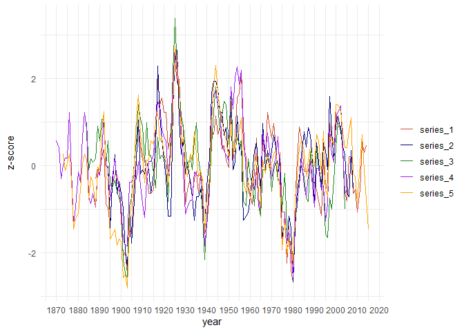
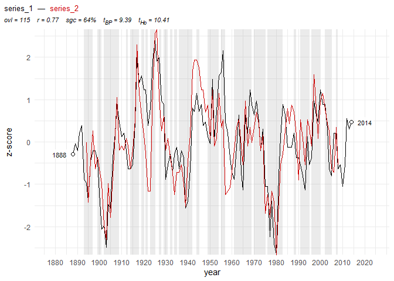

The fellingdater package provides a suite of functions for dendrochronological and dendroarchaeological analysis, covering a workflow from tree-ring data processing and crossdating, up to the estimation and reporting of felling dates. Originally designed to assist dendrochronologists in inferring felling dates from dated tree-ring series with partially preserved sapwood, the package has been expanded to include a workflow for tree-ring dating, analysis, and visualization.

Installation
You can install the latest release of fellingdater from GitHub or R-universe:
# install.packages("pak")
pak::pak("ropensci/fellingdater")or
install.packages("fellingdater", repos = "https://ropensci.r-universe.dev")Core functionality
Tree-ring series analysis (trs_* functions):
Data generation and preparation: Create synthetic datasets with
trs_pseudo_rwl(), or read and prepare real data withread_fh(),trs_select(),trs_remove()andtrs_trim().-
Crossdating analysis: Perform crossdating with
trs_crossdate()and set end dates for the tree-ring series withtrs_date_end().The statistical measures in the crossdating procedure include:
t-values according to Hollstein (1980) and Baillie & Pilcher (1973) transformation procedures (
trs_tho()andtrs_tbp())percentage of parallel variation, including (Semi-)Synchronous Growth Changes (SGC and SSGC, Visser 2020), and Gleichläufigkeit (Buras & Wilmking 2015, Eckstein & Bauch 1969, Huber 1943) and associated significance level (Jansma 1995) (
trs_pv())correlation measures, r Pearson and t-values (
trs_tSt())
Visualization: Display crossdating results with
trs_plot_dated(), or individual series withtrs_plot_rwl()
Felling date estimation (sw_* functions):
The package’s primary focus is estimating felling dates from accurately dated tree-ring series with preserved sapwood (sw). When the bark/cambial zone (waney edge) is absent, the preserved sapwood rings can be used to establish a date range for the felling event, allowing researchers to report an interval in which the actual felling date (fd) likely falls.
This procedure can be applied to individual series as well as to a collection of related timbers.
Individual series: Estimate felling date ranges from tree-ring series with preserved sapwood.
Group analysis: Combine multiple samples assumed to be felled simultaneously for enhanced precision.
Probability densities: Work with sapwood probability distributions and create summed probability densities that reflect dynamics in felling date intensity.

Workflow
The package workflow progresses logically through:
- Data preparation - Generate synthetic data or prepare existing tree-ring measurements
- Crossdating and statistical analysis - Establish accurate calendar dates for tree-ring series
- Quality control - Validate dating results using multiple statistical measures
- Felling date estimation - Apply sapwood models to dated series with preserved sapwood
- Grouping - Combine individual felling date estimates for related wooden finds
- Visualization and reporting - Present results with publication-ready graphics
Examples
Felling date estimation
In the following example the combined felling date range for a set of five dated tree-ring series is computed:
library(fellingdater)
## a data set where all series have partially preserved sapwood:
sw_example1
#> series last n_sapwood waneyedge
#> 1 trs_01 1000 5 FALSE
#> 2 trs_02 1009 10 FALSE
#> 3 trs_03 1007 15 FALSE
#> 4 trs_04 1005 16 FALSE
#> 5 trs_05 1010 8 FALSE
sw_combine(sw_example1, plot = TRUE)
The light grey distributions shows felling date probability densities for each individual series, while the dark grey distribution represents the combined estimate for a common felling date.
The sapwood model used in the example above to estimate the felling date range, was published by Hollstein (1980):
sw_model("Hollstein_1980", plot = TRUE)
Tree-ring series analysis
The package provides comprehensive tools for the tree-ring analysis workflow:
- Generate synthetic tree-ring data for testing
set.seed(1234)
trs <- trs_pseudo_rwl(n_series = 5, series_length = c(100, 150),
end_date = c(2000, 2025), related = TRUE,
prefix = "series_")
trs_plot_rwl(trs,
color = c("tomato3", "navyblue", "forestgreen", "purple", "orange")
)
- Crossdate a series against a reference series/chronology
series <- trs |> trs_select("series_1", trim = TRUE)
reference <- trs |> trs_select("series_2")
cd_results <- trs_crossdate(series, reference, min_overlap = 50,
sliding = TRUE, top_n = 5, rank_by = "t_Ho")
#> | | | 0% | | | 1% | |= | 1% | |= | 2% | |== | 3% | |=== | 4% | |=== | 5% | |==== | 6% | |===== | 7% | |===== | 8% | |====== | 8% | |====== | 9% | |======= | 10% | |======== | 11% | |======== | 12% | |========= | 13% | |========== | 14% | |========== | 15% | |=========== | 15% | |=========== | 16% | |============ | 17% | |============= | 18% | |============= | 19% | |============== | 20% | |=============== | 21% | |=============== | 22% | |================ | 22% | |================ | 23% | |================= | 24% | |================== | 25% | |================== | 26% | |=================== | 27% | |==================== | 28% | |==================== | 29% | |===================== | 29% | |===================== | 30% | |====================== | 31% | |======================= | 32% | |======================= | 33% | |======================= | 34% | |======================== | 34% | |======================== | 35% | |========================= | 36% | |========================== | 37% | |========================== | 38% | |=========================== | 38% | |=========================== | 39% | |============================ | 40% | |============================ | 41% | |============================= | 41% | |============================= | 42% | |============================== | 43% | |=============================== | 44% | |=============================== | 45% | |================================ | 45% | |================================ | 46% | |================================= | 47% | |================================= | 48% | |================================== | 48% | |================================== | 49% | |=================================== | 50% | |==================================== | 51% | |==================================== | 52% | |===================================== | 52% | |===================================== | 53% | |====================================== | 54% | |====================================== | 55% | |======================================= | 55% | |======================================= | 56% | |======================================== | 57% | |========================================= | 58% | |========================================= | 59% | |========================================== | 59% | |========================================== | 60% | |=========================================== | 61% | |=========================================== | 62% | |============================================ | 62% | |============================================ | 63% | |============================================= | 64% | |============================================== | 65% | |============================================== | 66% | |=============================================== | 66% | |=============================================== | 67% | |=============================================== | 68% | |================================================ | 69% | |================================================= | 70% | |================================================= | 71% | |================================================== | 71% | |================================================== | 72% | |=================================================== | 73% | |==================================================== | 74% | |==================================================== | 75% | |===================================================== | 76% | |====================================================== | 77% | |====================================================== | 78% | |======================================================= | 78% | |======================================================= | 79% | |======================================================== | 80% | |========================================================= | 81% | |========================================================= | 82% | |========================================================== | 83% | |=========================================================== | 84% | |=========================================================== | 85% | |============================================================ | 85% | |============================================================ | 86% | |============================================================= | 87% | |============================================================== | 88% | |============================================================== | 89% | |=============================================================== | 90% | |================================================================ | 91% | |================================================================ | 92% | |================================================================= | 92% | |================================================================= | 93% | |================================================================== | 94% | |=================================================================== | 95% | |=================================================================== | 96% | |==================================================================== | 97% | |===================================================================== | 98% | |===================================================================== | 99% | |======================================================================| 99% | |======================================================================| 100%
#>
#> Processing crossdate results...
cd_results
#> series length first last reference ref_first ref_last overlap r_pearson
#> 1 series_1 127 1888 2014 series_2 1894 2008 115 0.77404006
#> 2 series_1 127 1831 1957 series_2 1894 2008 64 0.18945685
#> 3 series_1 127 1876 2002 series_2 1894 2008 109 0.04366101
#> 4 series_1 127 1861 1987 series_2 1894 2008 94 0.14617934
#> 5 series_1 127 1850 1976 series_2 1894 2008 83 0.11888267
#> t_St t_BP t_Ho sgc ssgc sgc_p glk glk_p
#> 1 13.00 9.39 10.41 64.0 11.4 0.002610835 69.7 2.305114e-05
#> 2 1.52 1.94 2.22 47.6 15.9 1.296761417 55.6 3.740628e-01
#> 3 0.45 2.43 1.93 50.0 11.1 1.000000000 55.6 2.460349e-01
#> 4 1.42 1.17 1.85 50.5 10.8 0.916970020 55.9 2.514796e-01
#> 5 1.08 2.01 1.81 54.9 12.2 0.374098327 61.0 4.551633e-02- Visualize crossdating results
series_dated <- trs_end_date(series, 2014)
trs_plot_dated(series_dated, reference,
zscore = TRUE, pv_highlight = TRUE)
Getting started
Explore the package capabilities through our documentation:
- Function reference: Complete overview of all functions and datasets at docs.ropensci.org/fellingdater/reference/
-
Practical examples: Step-by-step workflows in the
Get startedvignette - Sapwood models: Available regional sapwood datasets and their applications
Motivation & citation
This package was developed during the analysis of a large data set of tree-ring series originating from medieval timber constructions in Bruges (Belgium). The results of this study were published in Dendrochronologia.
Please cite these papers when using the fellingdater package:
Kristof HANECA
2024. fellingdater: a toolkit to estimate, report and combine felling dates derived from historical tree-ring series. Journal of Open Source Software, 9(97), 6716. https://doi.org/10.21105/joss.06716
Kristof HANECA
https://doi.org/10.1016/j.dendro.2020.125773
Acknowledgements
The fellingdater package builds on established crossdating algorithms from dendrochronology literature. It also draws inspiration from established R-apackages like dplR.
Academic papers citing fellingdater
Altman J., Altmanova N., Fibich P., Korznikov K. & Fonti P. 2025: Advancing dendrochronology with R: an overview of packages and future perspectives, Frontiers in Ecology and Evolution 13, 1593675. https://doi.org/10.3389/fevo.2025.1593675
Haneca K., Debonne V., Davies D., McCarroll D. & Loader N.J. 2025: Oxygen isotope dendrochronology allows dating of historical timbers across a wide geographical region, Dendrochronologia 89, 126283. https://doi.org/10.1016/j.dendro.2024.126283
Haneca K. 2024: fellingdater: a toolkit to estimate, report and combine felling dates derived from historical tree-ring series, Journal of Open Source Software 9.97, 6716. https://doi.org/doi.org/10.21105/joss.06716
Haneca K. & De Groote K. 2024: Ieper - De Meersen. Deel 5. Houten grafkisten, tonnen en gebruiksvoorwerpen: dendrochronologie, typologie en houtonderzoek, Onderzoeksrapporten agentschap Onroerend Erfgoed 330, Brussel. https://doi.org/10.55465/CNJU8492
Domínguez-Delmás M., Schroeder H., Kuitems M., Haneca K., Archangel S., van Duin P. & Piena H. 2023: A stepwise multidisciplinary approach to determine the date and provenance of historical wooden objects, Journal of Cultural Heritage 62, 430–440. https://doi.org/10.1016/j.culher.2023.06.023
Haneca K., Debonne V. & Hoffsummer P. 2020: The ups and downs of the building trade in a medieval city: Tree-ring data as proxies for economic, social and demographic dynamics in Bruges (c. 1200–1500), Dendrochronologia 64, 125773. https://doi.org/10.1016/j.dendro.2020.125773
Comments and contributions
Please report any issues or bugs here: https://github.com/ropensci/fellingdater/issues.
Get citation information for
fellingdaterin R typingcitation(package = 'fellingdater').Please note that the
fellingdaterpackage is released with a Contributor Code of Conduct. By contributing to this project, you agree to abide by its terms.